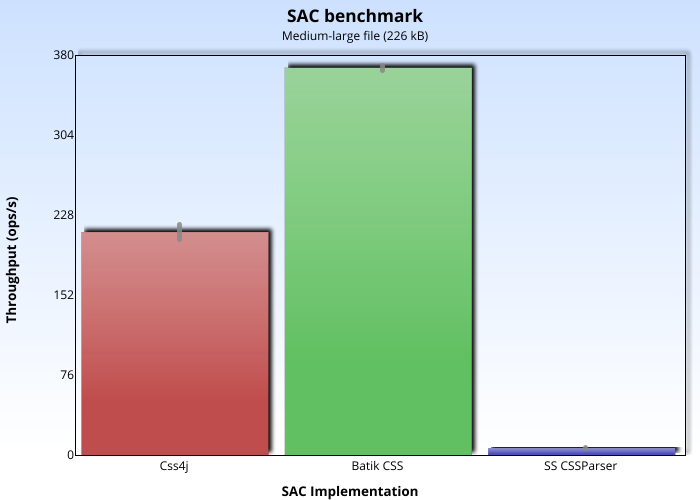

SAC benchmarks
Overview
The SAC benchmarks measure how fast different SAC implementations parse CSS style sheets. The following software versions were used:
- Java: AdoptOpenJDK 15.
- JMH: 1.26.
- css4j: 1.2 (pre-release).
- Batik: 1.13.
- SteadyState CSSParser: 0.9.29.
The computer has an Intel® Core™ i5-1035G7 CPU and 8GB of RAM.
Please note that css4j 1.x versions are superseded, and later versions use NSAC 2.1 instead of SAC.
SAC benchmark
Measures the speed at which the SAC parser can process a sample style sheet (contains a subset of the HTML5 user agent's sheet, and then a mix of common style rules).
Given that in css4j 1.x you can choose your preferred SAC parser, this benchmark may be of help.
The results come from SACBenchmark.
Medium-large file (226 kB)
Numeric results (higher is better):
| Implementation | Score | Error | Unit |
|---|---|---|---|
| Css4j | 213.960 | ±7.250 | ops/s |
| Batik CSS | 371.577 | ±2.017 | ops/s |
| SS CSSParser | 6.705 | ±0.057 | ops/s |
Small file (13 kB)
Numeric results (higher is better):
| Implementation | Score | Error | Unit |
|---|---|---|---|
| Css4j | 3767.204 | ±152.243 | ops/s |
| Batik CSS | 6521.440 | ±51.305 | ops/s |
| SS CSSParser | 146.390 | ±1.046 | ops/s |
Analysis
Batik has the fastest SAC parser: 1.7 times the throughput of css4j's, 45-55 times faster than SS CSSParser (depending on the file size) although it only supports CSS2 (and not in full). Also, in other tests has shown bad error recovery, causing it to yield (bogus) faster benchmarks if (unsupported) CSS3 is found. On the other hand, the css4j's SAC parser supports more CSS than the other contenders and is still reasonably fast.
The css4j's SAC parser is recommended by this project to use with css4j's 1.x Object Model (it is the default parser). However, if your use case only requires simple level 2 selectors and values, and performance is the main consideration (like when CSS is used to specify the user interface of a Java application), Batik's parser could be adequate.
The SteadyState CSSParser is the slowest and, although has recently improved its support for level 3 values, unfortunately its implementation of calc() has some quirks
and is incompatible with css4j 1.x.